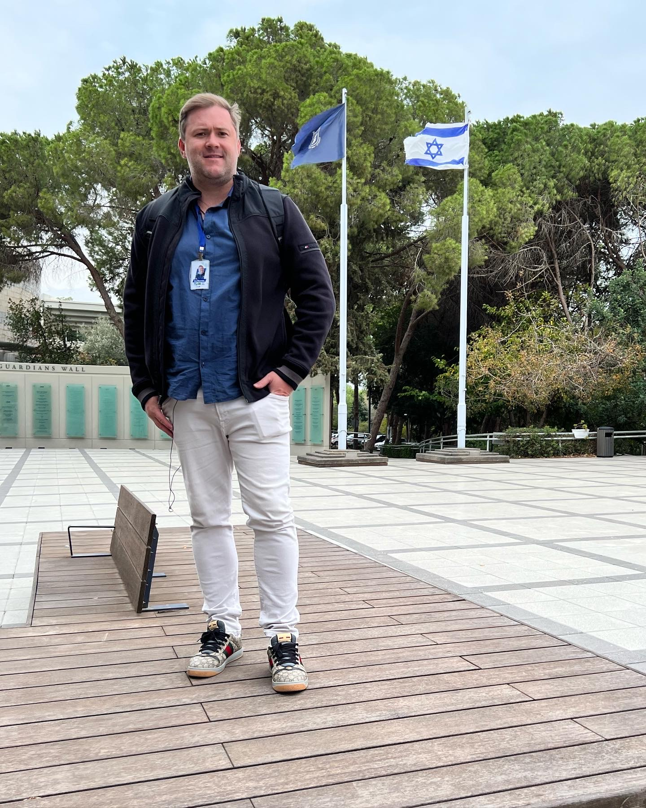
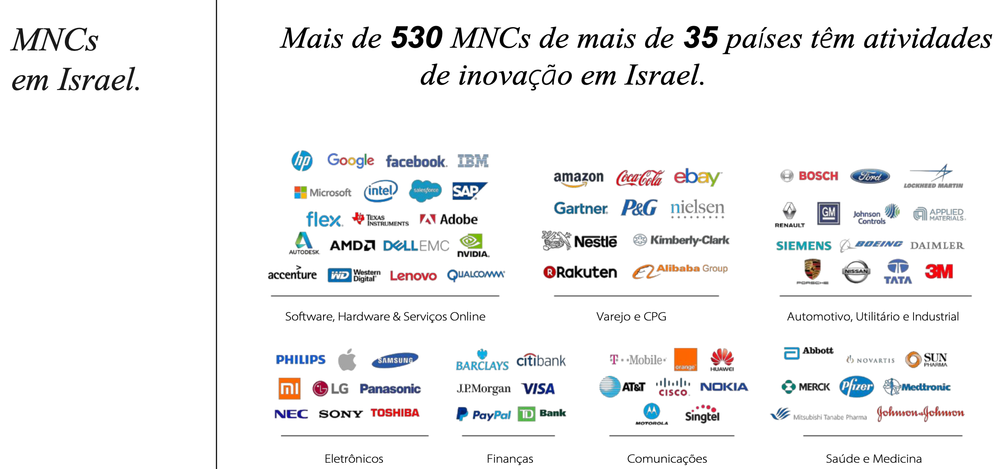
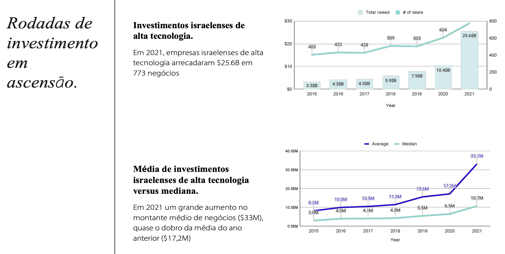

Um país com 9 milhões de pessoas, formado há 75 anos, rodeado por inimigos em constante estado de guerra desde a sua fundação, sem recursos naturais, consegue produzir mais startups do que países maiores e mais pacíficos, como o Japão, China, Coreia, Canadá e Reino Unido”. Israel tem atraído, per capta, duas vezes mais investimentos em venture capital que os Estados Unidos e três vezes mais do que a Europa.
“Israel só pode vencer a batalha pela sobrevivência desenvolvendo conhecimento especializado em tecnologia” Albert Einstein
- 9,5% do número de funcionários do setor técnico no mundo
- +10.000 startups
- 5,4% do PIB investidos em pesquisas e desenvolvimento, número 1 do mundo
O ecossistema de Startups que Israel é um dos maiores polos de inovação do mundo. O que nem todos sabem, entretanto, é que não foi simples transformar um país com 60% de área desértica no berço de empresas como Waze, Viber e Wix. Com PIB que supera os US$ 400 bilhões, Israel se tornou referência. Tel Aviv, principal polo tecnológico da nação, disputa ano a ano o posto de mais importante ecossistema do mundo.
🇮🇱 Um pouco sobre o ecossistema de inovação de Israel


Track da Missão Israel 2022 🇮🇱
🇮🇱 Visita no KIC Centro de Inovação Kinneret na Galiléia
Iniciamos no Centro de Inovação Kinneret na Galiléia, principal centro tecnológico para agricultura, água e sustentabilidade de Israel , por lá conhecemos soluções para o agro negócio e sustentabilidade.
KIC é um parque de P&D de Alta Tecnologia consiste em espaços de co-working, laboratórios de P&D e uma variedade de locais de testes profissionais que trabalham em cooperação com agricultores locais. É onde a academia, a indústria e a tecnologia se conectam e se reúnem.


🇮🇱 Visita no Kibutz
‘Kibutz’ em hebraico significa grupo. Comunidade onde as pessoas vivem e trabalham em conjunto para produzir economicamente. Baseia-se nos princípios da posse de propriedade comunal e da igualdade social.
Em Israel, os kibutz chamam a atenção por apresentarem grande desenvolvimento interno e excelência no sistema educacional. Dentro destas comunidades, a economia funciona por meio de oficinas de trabalho com diversas especialidades. Nas escolas, os alunos passam por cem horas de ensino anuais em que aprendem técnicas de agricultura, entre outras matérias.


🇮🇱 Visita na Afka College
O Afka College defende uma busca intransigente pela qualidade acadêmica, e fomento à inovação, criatividade e empreendedorismo. Além dos conhecimentos científicos, na Afeka eles focam no desenvolvimento de diversas competências pessoais, tais como: auto-aprendizagem, capacidade de comunicação, capacidade de trabalhar em equipe, abertura à inovação, pensamento criativo e empreendedorismo.


🇮🇱 Imersão no campus da Technion – Israel Institute of Technology
Universidade de pesquisa em ciência e tecnologia, que faz parte das melhores do mundo.
Foi fundada em 1924, é a universidade mais antiga de Israel, sendo reconhecida pela sua orquestração na disseminação de tecnologia para o avanço da humanidade.


🇮🇱 Visita na HomeBioGas
O HomeBiogas é um biodigestor israelense que promove o aproveitamento de recursos da sua casa. Esse tipo de produto promove a transformação dos resíduos orgânicos gerados em uma residência em gás de cozinha e biofertilizante. Por meio de uma cultura de bactérias presente no reator do produto, cascas, ossos, restos de alimentos e fezes de animais de estimação servem como matéria-prima para a geração de biogás.


🇮🇱 Visita no Peres Center for Peace and Innovation
É uma organização líder sem fins lucrativos e não governamental focada no desenvolvimento e implementação de programas exclusivos e de ponta. Atendem centenas de milhares de participantes de todas as idades, religiões e origens.


🇮🇱 Visita na Instituto Weizmann de Ciência
O Instituto Weizmann da Ciência é um instituto de ensino superior e de pesquisa, situado em Rehovot, Israel. É uma das principais instituições de pesquisa básica multidisciplinar do mundo nas ciências naturais e exatas.


🇮🇱 Visita na Startup NanoSynex
A NanoSynex é uma empresa MedTech que visa fornecer novas soluções para melhorar a qualidade dos testes e reduzir os custos com saúde, acelerando os processos de diagnóstico.


🇮🇱 Visita na Startup Agrinoze
O sistema de irrigação e fertilização totalmente autônomo da Agrinoze aumenta significativamente o crescimento das plantas enquanto conserva água e nutrientes. Um algoritmo proprietário executa o sistema de ponta a ponta, aprendendo as características únicas da planta e do solo e respondendo às suas necessidades em tempo real.


🇮🇱 Reunião com a Sam Network Seamless
A Sam Seamless Network em Tel Aviv é especialista em proteger redes não gerenciadas , em resumo através de um agente instalado no modem da operadora você terá sua rede residencial ou empresarial protegida de ataques ou ameaças.


🇮🇱 Cultura, Religião e Espiritualidade em Jerusalém / Mar Morto / Jericó
Jerusalém, localizada em um planalto nas montanhas da Judeia entre o Mediterrâneo e o mar Morto, é uma das cidades mais antigas do mundo. É considerada sagrada pelas três principais religiões abraâmicas — judaísmo, cristianismo e islamismo.
O Mar Morto, que banha Israel, a Cisjordânia e a Jordânia, é um lago salgado cujas margens estão mais de 400 m abaixo do nível do mar, sendo o ponto mais baixo em terra seca do planeta. Sua famosa água hipersalina facilita a flutuação, e a lama negra rica em sais minerais é usada em tratamentos terapêuticos e estéticos. A denominação Mar Morto traduz a impossibilidade de vida neste local.
Jericó é uma cidade palestina, situada na Cisjordânia, a poucos quilômetros do rio Jordão, a 8 quilômetros da ponta norte do Mar Morto e aproximadamente a 27 km de Jerusalém. É considerada a cidade mais antiga ainda existente, habitada há 11 000 anos.


“Levarei para sempre todo aprendizado desse incrível programa de imersão tecnológica em Israel, vimos de perto soluções inovadoras na área do agro negócio, energia, saúde e segurança de redes”
“Israel foi uma transformação, tanto no lado profissional, quanto espiritual”
Agradeço ao Sebrae RR pela acolhida e a organização assertiva, bem como a todos os participantes que contribuíram no sucesso da missão.
Acesse nosso Destaque no Instagram Missão Israel e confira através de fotos e vídeos tudo o que aconteceu nessa incrível missão.
Missão Israel 2022 🇮🇱